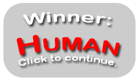
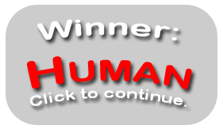

Four in a Row
Attribution
From Making Games with Python & Pygame chapter 10.
Original Python code released under a Simplified BSD license.
Images licensed under Creative Commons BY-NC-SA.
Original Python code
# Four-In-A-Row (a Connect Four clone)
# By Al Sweigart al@inventwithpython.com
# http://inventwithpython.com/pygame
# Released under a "Simplified BSD" license
import random, copy, sys, pygame
from pygame.locals import *
BOARDWIDTH = 7 # how many spaces wide the board is
BOARDHEIGHT = 6 # how many spaces tall the board is
assert BOARDWIDTH >= 4 and BOARDHEIGHT >= 4, 'Board must be at least 4x4.'
DIFFICULTY = 2 # how many moves to look ahead. (>2 is usually too much)
SPACESIZE = 50 # size of the tokens and individual board spaces in pixels
FPS = 30 # frames per second to update the screen
WINDOWWIDTH = 640 # width of the program's window, in pixels
WINDOWHEIGHT = 480 # height in pixels
XMARGIN = int((WINDOWWIDTH - BOARDWIDTH * SPACESIZE) / 2)
YMARGIN = int((WINDOWHEIGHT - BOARDHEIGHT * SPACESIZE) / 2)
BRIGHTBLUE = (0, 50, 255)
WHITE = (255, 255, 255)
BGCOLOR = BRIGHTBLUE
TEXTCOLOR = WHITE
RED = 'red'
BLACK = 'black'
EMPTY = None
HUMAN = 'human'
COMPUTER = 'computer'
def main():
global FPSCLOCK, DISPLAYSURF, REDPILERECT, BLACKPILERECT, REDTOKENIMG
global BLACKTOKENIMG, BOARDIMG, ARROWIMG, ARROWRECT, HUMANWINNERIMG
global COMPUTERWINNERIMG, WINNERRECT, TIEWINNERIMG
pygame.init()
FPSCLOCK = pygame.time.Clock()
DISPLAYSURF = pygame.display.set_mode((WINDOWWIDTH, WINDOWHEIGHT))
pygame.display.set_caption('Four in a Row')
REDPILERECT = pygame.Rect(int(SPACESIZE / 2), WINDOWHEIGHT - int(3 * SPACESIZE / 2), SPACESIZE, SPACESIZE)
BLACKPILERECT = pygame.Rect(WINDOWWIDTH - int(3 * SPACESIZE / 2), WINDOWHEIGHT - int(3 * SPACESIZE / 2), SPACESIZE, SPACESIZE)
REDTOKENIMG = pygame.image.load('4row_red.png')
REDTOKENIMG = pygame.transform.smoothscale(REDTOKENIMG, (SPACESIZE, SPACESIZE))
BLACKTOKENIMG = pygame.image.load('4row_black.png')
BLACKTOKENIMG = pygame.transform.smoothscale(BLACKTOKENIMG, (SPACESIZE, SPACESIZE))
BOARDIMG = pygame.image.load('4row_board.png')
BOARDIMG = pygame.transform.smoothscale(BOARDIMG, (SPACESIZE, SPACESIZE))
HUMANWINNERIMG = pygame.image.load('4row_humanwinner.png')
COMPUTERWINNERIMG = pygame.image.load('4row_computerwinner.png')
TIEWINNERIMG = pygame.image.load('4row_tie.png')
WINNERRECT = HUMANWINNERIMG.get_rect()
WINNERRECT.center = (int(WINDOWWIDTH / 2), int(WINDOWHEIGHT / 2))
ARROWIMG = pygame.image.load('4row_arrow.png')
ARROWRECT = ARROWIMG.get_rect()
ARROWRECT.left = REDPILERECT.right + 10
ARROWRECT.centery = REDPILERECT.centery
isFirstGame = True
while True:
runGame(isFirstGame)
isFirstGame = False
def runGame(isFirstGame):
if isFirstGame:
# Let the computer go first on the first game, so the player
# can see how the tokens are dragged from the token piles.
turn = COMPUTER
showHelp = True
else:
# Randomly choose who goes first.
if random.randint(0, 1) == 0:
turn = COMPUTER
else:
turn = HUMAN
showHelp = False
# Set up a blank board data structure.
mainBoard = getNewBoard()
while True: # main game loop
if turn == HUMAN:
# Human player's turn.
getHumanMove(mainBoard, showHelp)
if showHelp:
# turn off help arrow after the first move
showHelp = False
if isWinner(mainBoard, RED):
winnerImg = HUMANWINNERIMG
break
turn = COMPUTER # switch to other player's turn
else:
# Computer player's turn.
column = getComputerMove(mainBoard)
animateComputerMoving(mainBoard, column)
makeMove(mainBoard, BLACK, column)
if isWinner(mainBoard, BLACK):
winnerImg = COMPUTERWINNERIMG
break
turn = HUMAN # switch to other player's turn
if isBoardFull(mainBoard):
# A completely filled board means it's a tie.
winnerImg = TIEWINNERIMG
break
while True:
# Keep looping until player clicks the mouse or quits.
drawBoard(mainBoard)
DISPLAYSURF.blit(winnerImg, WINNERRECT)
pygame.display.update()
FPSCLOCK.tick()
for event in pygame.event.get(): # event handling loop
if event.type == QUIT or (event.type == KEYUP and event.key == K_ESCAPE):
pygame.quit()
sys.exit()
elif event.type == MOUSEBUTTONUP:
return
def makeMove(board, player, column):
lowest = getLowestEmptySpace(board, column)
if lowest != -1:
board[column][lowest] = player
def drawBoard(board, extraToken=None):
DISPLAYSURF.fill(BGCOLOR)
# draw tokens
spaceRect = pygame.Rect(0, 0, SPACESIZE, SPACESIZE)
for x in range(BOARDWIDTH):
for y in range(BOARDHEIGHT):
spaceRect.topleft = (XMARGIN + (x * SPACESIZE), YMARGIN + (y * SPACESIZE))
if board[x][y] == RED:
DISPLAYSURF.blit(REDTOKENIMG, spaceRect)
elif board[x][y] == BLACK:
DISPLAYSURF.blit(BLACKTOKENIMG, spaceRect)
# draw the extra token
if extraToken != None:
if extraToken['color'] == RED:
DISPLAYSURF.blit(REDTOKENIMG, (extraToken['x'], extraToken['y'], SPACESIZE, SPACESIZE))
elif extraToken['color'] == BLACK:
DISPLAYSURF.blit(BLACKTOKENIMG, (extraToken['x'], extraToken['y'], SPACESIZE, SPACESIZE))
# draw board over the tokens
for x in range(BOARDWIDTH):
for y in range(BOARDHEIGHT):
spaceRect.topleft = (XMARGIN + (x * SPACESIZE), YMARGIN + (y * SPACESIZE))
DISPLAYSURF.blit(BOARDIMG, spaceRect)
# draw the red and black tokens off to the side
DISPLAYSURF.blit(REDTOKENIMG, REDPILERECT) # red on the left
DISPLAYSURF.blit(BLACKTOKENIMG, BLACKPILERECT) # black on the right
def getNewBoard():
board = []
for x in range(BOARDWIDTH):
board.append([EMPTY] * BOARDHEIGHT)
return board
def getHumanMove(board, isFirstMove):
draggingToken = False
tokenx, tokeny = None, None
while True:
for event in pygame.event.get(): # event handling loop
if event.type == QUIT:
pygame.quit()
sys.exit()
elif event.type == MOUSEBUTTONDOWN and not draggingToken and REDPILERECT.collidepoint(event.pos):
# start of dragging on red token pile.
draggingToken = True
tokenx, tokeny = event.pos
elif event.type == MOUSEMOTION and draggingToken:
# update the position of the red token being dragged
tokenx, tokeny = event.pos
elif event.type == MOUSEBUTTONUP and draggingToken:
# let go of the token being dragged
if tokeny < YMARGIN and tokenx > XMARGIN and tokenx < WINDOWWIDTH - XMARGIN:
# let go at the top of the screen.
column = int((tokenx - XMARGIN) / SPACESIZE)
if isValidMove(board, column):
animateDroppingToken(board, column, RED)
board[column][getLowestEmptySpace(board, column)] = RED
drawBoard(board)
pygame.display.update()
return
tokenx, tokeny = None, None
draggingToken = False
if tokenx != None and tokeny != None:
drawBoard(board, {'x':tokenx - int(SPACESIZE / 2), 'y':tokeny - int(SPACESIZE / 2), 'color':RED})
else:
drawBoard(board)
if isFirstMove:
# Show the help arrow for the player's first move.
DISPLAYSURF.blit(ARROWIMG, ARROWRECT)
pygame.display.update()
FPSCLOCK.tick()
def animateDroppingToken(board, column, color):
x = XMARGIN + column * SPACESIZE
y = YMARGIN - SPACESIZE
dropSpeed = 1.0
lowestEmptySpace = getLowestEmptySpace(board, column)
while True:
y += int(dropSpeed)
dropSpeed += 0.5
if int((y - YMARGIN) / SPACESIZE) >= lowestEmptySpace:
return
drawBoard(board, {'x':x, 'y':y, 'color':color})
pygame.display.update()
FPSCLOCK.tick()
def animateComputerMoving(board, column):
x = BLACKPILERECT.left
y = BLACKPILERECT.top
speed = 1.0
# moving the black tile up
while y > (YMARGIN - SPACESIZE):
y -= int(speed)
speed += 0.5
drawBoard(board, {'x':x, 'y':y, 'color':BLACK})
pygame.display.update()
FPSCLOCK.tick()
# moving the black tile over
y = YMARGIN - SPACESIZE
speed = 1.0
while x > (XMARGIN + column * SPACESIZE):
x -= int(speed)
speed += 0.5
drawBoard(board, {'x':x, 'y':y, 'color':BLACK})
pygame.display.update()
FPSCLOCK.tick()
# dropping the black tile
animateDroppingToken(board, column, BLACK)
def getComputerMove(board):
potentialMoves = getPotentialMoves(board, BLACK, DIFFICULTY)
# get the best fitness from the potential moves
bestMoveFitness = -1
for i in range(BOARDWIDTH):
if potentialMoves[i] > bestMoveFitness and isValidMove(board, i):
bestMoveFitness = potentialMoves[i]
# find all potential moves that have this best fitness
bestMoves = []
for i in range(len(potentialMoves)):
if potentialMoves[i] == bestMoveFitness and isValidMove(board, i):
bestMoves.append(i)
return random.choice(bestMoves)
def getPotentialMoves(board, tile, lookAhead):
if lookAhead == 0 or isBoardFull(board):
return [0] * BOARDWIDTH
if tile == RED:
enemyTile = BLACK
else:
enemyTile = RED
# Figure out the best move to make.
potentialMoves = [0] * BOARDWIDTH
for firstMove in range(BOARDWIDTH):
dupeBoard = copy.deepcopy(board)
if not isValidMove(dupeBoard, firstMove):
continue
makeMove(dupeBoard, tile, firstMove)
if isWinner(dupeBoard, tile):
# a winning move automatically gets a perfect fitness
potentialMoves[firstMove] = 1
break # don't bother calculating other moves
else:
# do other player's counter moves and determine best one
if isBoardFull(dupeBoard):
potentialMoves[firstMove] = 0
else:
for counterMove in range(BOARDWIDTH):
dupeBoard2 = copy.deepcopy(dupeBoard)
if not isValidMove(dupeBoard2, counterMove):
continue
makeMove(dupeBoard2, enemyTile, counterMove)
if isWinner(dupeBoard2, enemyTile):
# a losing move automatically gets the worst fitness
potentialMoves[firstMove] = -1
break
else:
# do the recursive call to getPotentialMoves()
results = getPotentialMoves(dupeBoard2, tile, lookAhead - 1)
potentialMoves[firstMove] += (sum(results) / BOARDWIDTH) / BOARDWIDTH
return potentialMoves
def getLowestEmptySpace(board, column):
# Return the row number of the lowest empty row in the given column.
for y in range(BOARDHEIGHT-1, -1, -1):
if board[column][y] == EMPTY:
return y
return -1
def isValidMove(board, column):
# Returns True if there is an empty space in the given column.
# Otherwise returns False.
if column < 0 or column >= (BOARDWIDTH) or board[column][0] != EMPTY:
return False
return True
def isBoardFull(board):
# Returns True if there are no empty spaces anywhere on the board.
for x in range(BOARDWIDTH):
for y in range(BOARDHEIGHT):
if board[x][y] == EMPTY:
return False
return True
def isWinner(board, tile):
# check horizontal spaces
for x in range(BOARDWIDTH - 3):
for y in range(BOARDHEIGHT):
if board[x][y] == tile and board[x+1][y] == tile and board[x+2][y] == tile and board[x+3][y] == tile:
return True
# check vertical spaces
for x in range(BOARDWIDTH):
for y in range(BOARDHEIGHT - 3):
if board[x][y] == tile and board[x][y+1] == tile and board[x][y+2] == tile and board[x][y+3] == tile:
return True
# check / diagonal spaces
for x in range(BOARDWIDTH - 3):
for y in range(3, BOARDHEIGHT):
if board[x][y] == tile and board[x+1][y-1] == tile and board[x+2][y-2] == tile and board[x+3][y-3] == tile:
return True
# check \ diagonal spaces
for x in range(BOARDWIDTH - 3):
for y in range(BOARDHEIGHT - 3):
if board[x][y] == tile and board[x+1][y+1] == tile and board[x+2][y+2] == tile and board[x+3][y+3] == tile:
return True
return False
if __name__ == '__main__':
main()